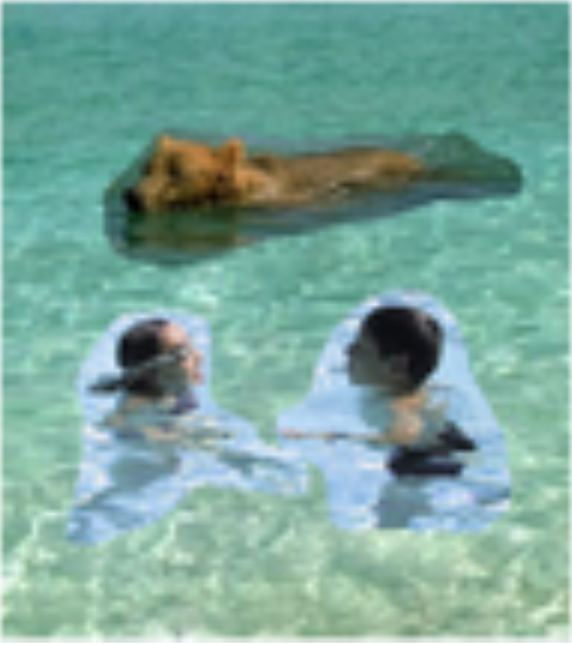
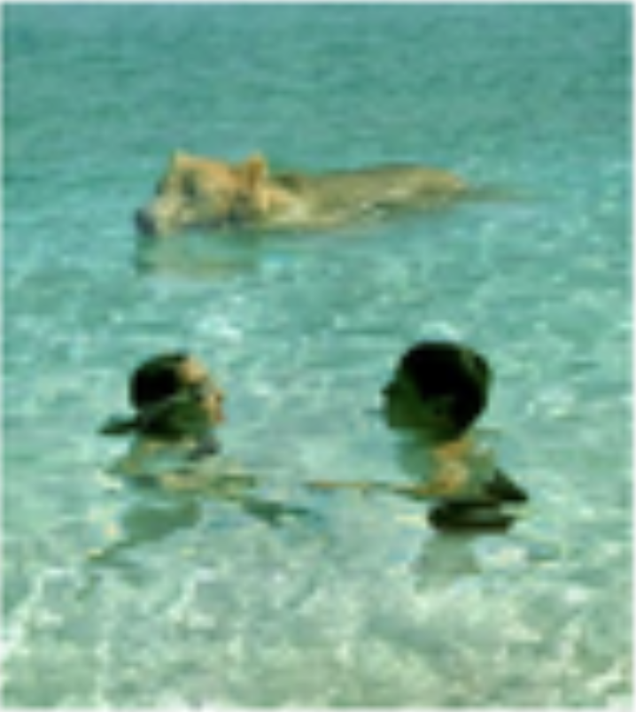
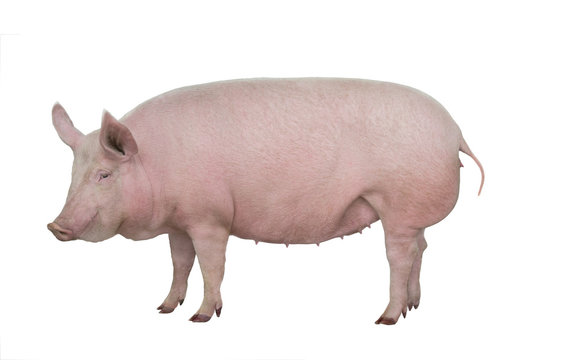
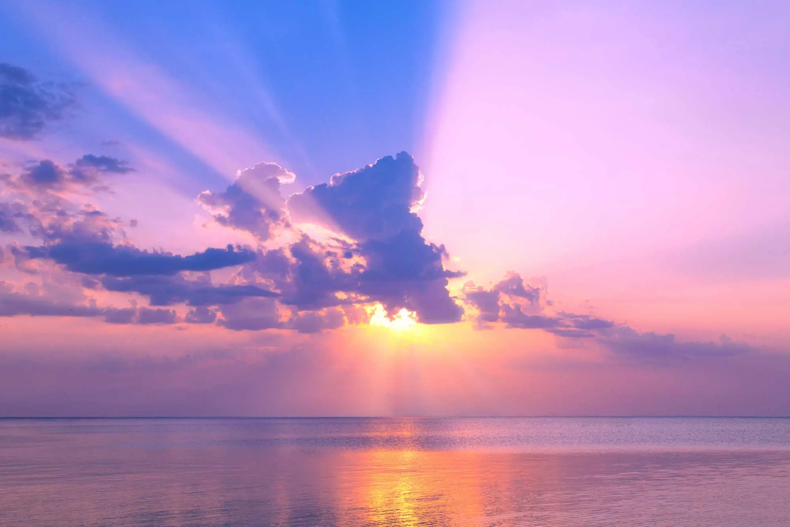
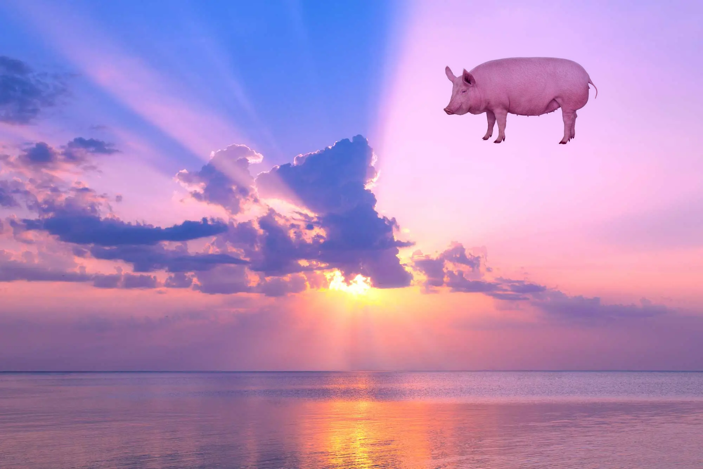
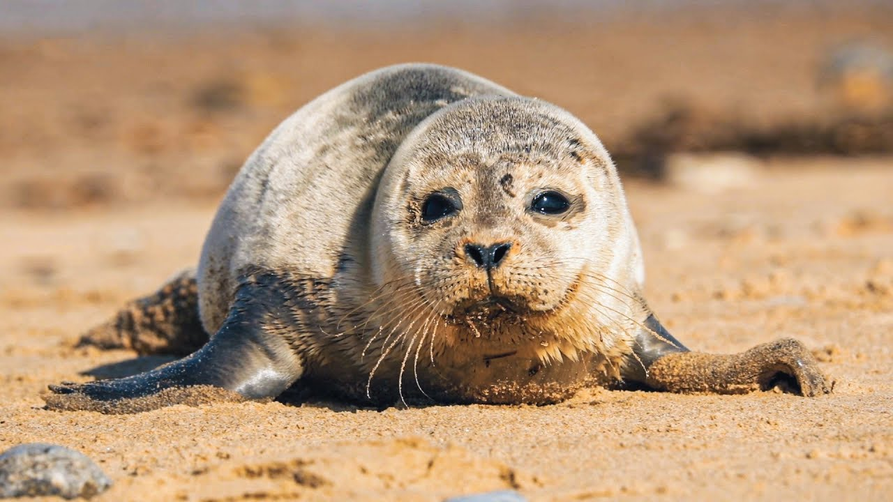
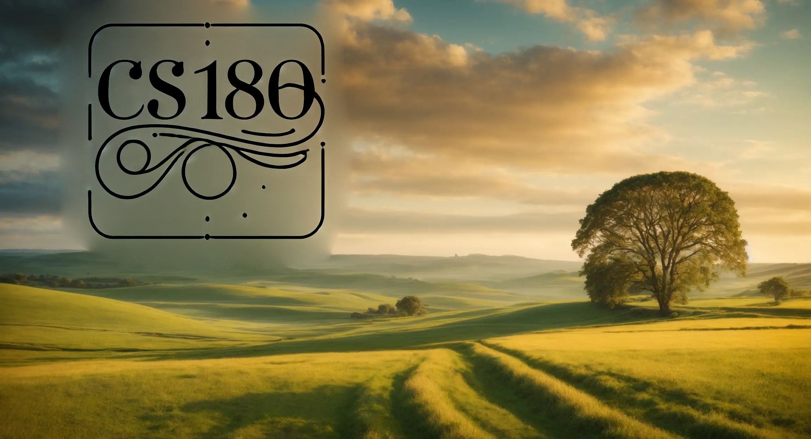
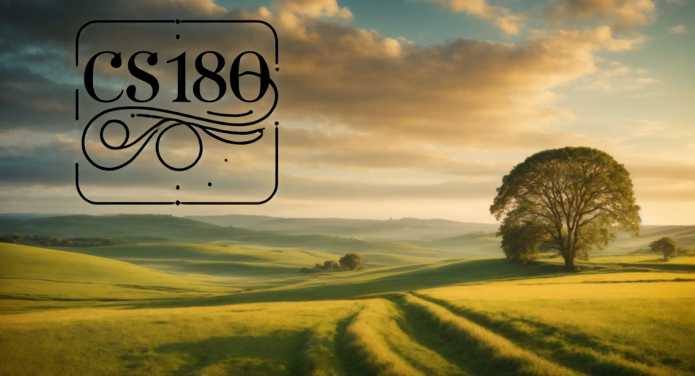

Overview
This project explores gradient-domain processing with the goal to seamlessly blend an
object or texture from a source to a target image. One key insight to create smooth blends
between images is the realization that people often care more about the gradient of an image
rather than overall intesity. We can take advantage of this fact to find values of pixels that
maximally preserve the gradient of the source region wihtout changing background pixels.
We can formulate this as a least squares problem where given the pixel intensities of a source
image "s" and the target image "t", we want to solve for new intensity values "v" within a source
region "S":
\[ \mathbf{v} = \underset{\mathbf{v}}{\arg\min} \left( \sum_{i \in S, j \in N_i \cap S}
\left( \left( v_i - v_j \right) - \left( s_i - s_j \right) \right)^2 + \sum_{i \in S, j
\in N_i \cap \neg S} \left( \left( v_i - t_j \right) - \left( s_i - s_j \right) \right)^2 \right) \]
Each "i" is a pixel in the source region "S" and each "j" is a 4-neighbor of "i". Each summation guides the
gradient values to match those of the source region. In the first summation, the gradient is over two variable pixels,
and the second one has one variable and one fixed pixel in the target region.
As an example, consider these images of a bear and swimmers that are attempting to be blended into water.
As you can see if the swimmers and the bear and their regions around them, which we consider "S" are very
poorly blended into the pool. In the new image "v" which is the composite we create, all the pixels outside
of the swimmers and their surrounding and the bear and its surrounding will be directly pasted into "v".
However, in the region "S", we use the 4 neighbors (up, down, left, right) to compute the x and y gradients and
make sure that the pixels inside "S" have the same gradient and the image being pasted in. On the boundary pixel
values are pulled directly from the target image to maintain the seamless blend.
Composite Image without Blend
Composite Image with Blend
Toy Problem
As an example for gradient domain processing let's first start with an image of a toy. In this, we
first compute x and y gradients from the image, then use all the gradients, plus one pixel intensity,
to reconstruct the image.
Let the source image intensity at \((x, y)\) be \( s(x, y) \), and the solved image values be \( v(x, y) \). For each pixel, the objectives are:
1. Minimize \( \left( v(x+1, y) - v(x, y) - (s(x+1, y) - s(x, y)) \right)^2 \)
The \(x\)-gradients of \(v\) should closely match the \(x\)-gradients of \(s\).
2. Minimize \( \left( v(x, y+1) - v(x, y) - (s(x, y+1) - s(x, y)) \right)^2 \)
The \(y\)-gradients of \(v\) should closely match the \(y\)-gradients of \(s\).
Since \(v\) could be shifted by any constant, add one more objective:
3. Minimize \( \left( v(1, 1) - s(1, 1) \right)^2 \)
This ensures the top-left corners of both images have the same color.
The objective function can be written in the standard least squares form: \( (A\mathbf{v} - \mathbf{b})^2 \), where
\( A \) is a sparse matrix, \( \mathbf{v} \) is the vector of variables, and \( \mathbf{b} \) is known.
First, map each pixel to a variable number using:
\[
\text{im2var}(1:\text{imh} \cdot \text{imw}) = 1:\text{imh} \cdot \text{imw}.
\]
where \( \text{imh} \) is the image height. For Objective 1, define:
\[
\text{e} = \text{e} + 1; \quad
A(e, \text{im2var}(y, x+1)) = 1; \quad
A(e, \text{im2var}(y, x)) = -1; \quad
b(e) = s(y, x+1) - s(y, x).
\]
For Objective 2, add y-gradient constraints to \( A \) and \( \mathbf{b} \). For example:
\[
\text{e} = \text{e} + 1; \quad
A(e, \text{im2var}(1, 1)) = 1; \quad
b(e) = s(1, 1).
\]
Finally, solve for \( \mathbf{v} \) using \( \mathbf{v} = A \backslash \mathbf{b} \)
or \( \mathbf{v} = \text{lscov}(A, b) \), and copy each solved value to the corresponding pixel in the output image.
As the following shows, performing this process recovers the original image:
Original Image

Recovered Image

Poisson Blending
To perform Poission Blending, the following procedure can be followed:
Step 1: Define the source and target regions. Align the source
region to the target using transformations (e.g., translation). Ensure the
entire object is contained, and ideally that background colors in both regions match for better blending.
Step 2: Solve the blending constraints:
\[
\mathbf{v} = \underset{\mathbf{v}}{\arg\min} \left( \sum_{i \in S, j \in N_i \cap S}
\left( (v_i - v_j) - (s_i - s_j) \right)^2 + \sum_{i \in S, j \in N_i \cap \neg S}
\left( (v_i - t_j) - (s_i - s_j) \right)^2 \right)
\]
Step 3: Copy the solved \(v_i\) values to the target image. For RGB
images, process each channel independently.
The following are examples of this process being carried out:
Penguin

Hiking

Penguin Hiking

Pig
Sky
Flying Pig
Seal
Matedors

Seal Fighting

Mixed Gradients (B&W)
We can improve the results of Poission blending, especially when pasting images that have fine lines where not all source image needs to be placed on the target image (like placing text on a new background). This can be achieved by using the gradient from the source or target that has a larger magnitude, rather than always using the source. The equation now looks like the following: \[ \mathbf{v} = \underset{\mathbf{v}}{\arg\min} \left( \sum_{i \in S, j \in N_i \cap S} \left( (v_i - v_j) - d_{ij} \right)^2 + \sum_{i \in S, j \in N_i \cap \neg S} \left( (v_i - t_j) - d_{ij} \right)^2 \right) \] where \(d_{ij}\) is the value of the gradient with larger magnitude. The following example clearly illustrates the improvements of this process:
Blended Image
Mixed Blended Image
